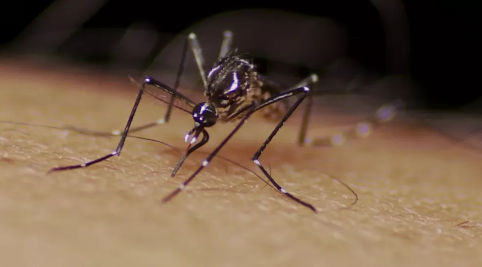

Admin
Setembro, 2022
Noticias
Boa Vista tem médio risco para transmissão de dengue, chikungunya e zika
Estudo levou em consideração dados colhidos no período de 15 a 24 de agosto em 8.254 imóveis do município.